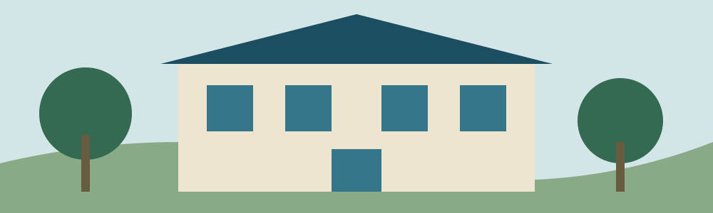

North Reach
Forested uplands and stream-learning projects. Browse a sample field notebook.
Search five local pages. No external search service is contacted.
An invented agency for an invented jurisdiction. A place to explore environmental information, public navigation and research interfaces.

The fictional headquarters brings together environmental learning, community resources and science communication. It is not a real office and has no public address.
Three invented regions help organize the sample collection.
Forested uplands and stream-learning projects. Browse a sample field notebook.
Community materials workshops and learning spaces.
Estuary observation and water-learning collections.
Field researchers, information designers and community educators are example roles in this fictional organization. There are no vacancies or recruitment services.
This research edition describes a planning sequence only: define a question, identify participants, outline activities and explain how learning will be shared. No funding is offered and no applications are accepted.
This local demo targets accessible structure and keyboard use. It has not received a conformance audit. Search and form data stay in the current page and are not sent or stored. Reloading clears entered values. Use fictional details when testing.